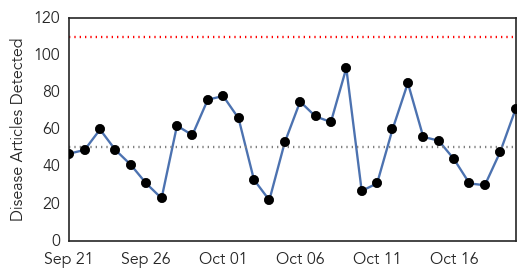
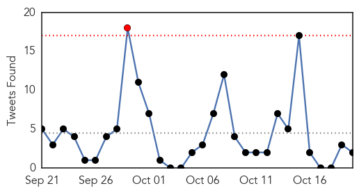
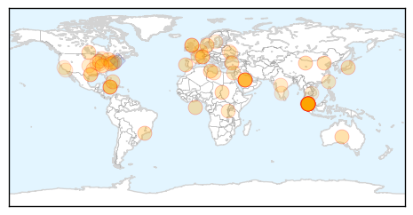
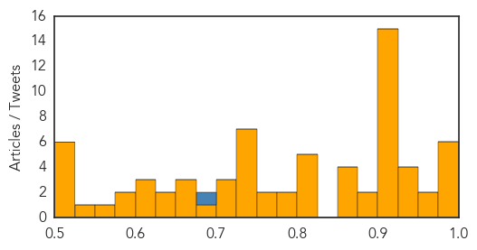
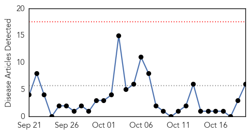
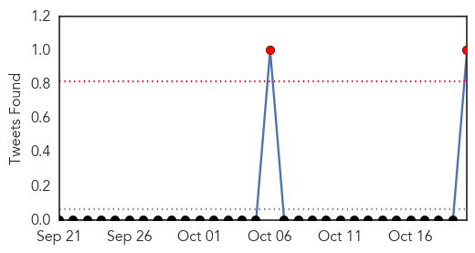
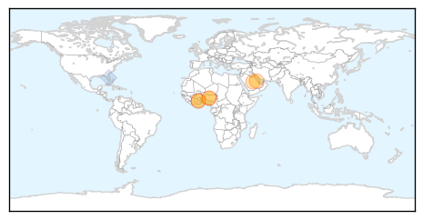

Unknown
30-Day Web Trend
0 alerts, 0 warnings

30-Day Twitter Trend
1 alerts, 0 warnings

Article Locations
Article Confidences
Top Articles:
- 0.990
- US, Saudi discussing Mers vaccine
- 0.990
- WHO chief says U.S., Saudi discussing MERS vaccine - World
- 0.983
- Tips To Help You Avoid Getting Infected
- 0.979
- Typhoid on the rise in KL - Nation
- 0.978
- What you need to know about this year’s flu vaccine
- 0.977
- World health chief says U.S., Saudi discussing MERS vaccine
- 0.952
- Typhoid fever cases on the rise in KL
- 0.952
- School district confirms case of Cryptosporidium
- 0.949
- Typhoid on the rise in Malaysian capital
- 0.933
- Typhoid fever cases on the rise in KL
- 0.930
- Kentucky health officials confirm first 2 cases of flu
- 0.925
- Typhoid Alert
- 0.923
- Dont Panic, Typhoid Fever Outbreak Under Control, Vaccine Sufficient
- 0.917
- Chicago Tribune
- 0.917
- Chicago Tribune
- 0.917
- Chicago Tribune
- 0.917
- Chicago Tribune
- 0.917
- Chicago Tribune
- 0.917
- Chicago Tribune
- 0.917
- Chicago Tribune
- 0.917
- Chicago Tribune
- 0.917
- Chicago Tribune
- 0.917
- Chicago Tribune
- 0.917
- Chicago Tribune
- 0.917
- Chicago Tribune
- 0.913
- Fred Co. Health Dept. To Hold Two Flu Clinics For Children
- 0.911
- Grundy County Health Department urges residents to get their flu shot
- 0.889
- Flu Mist Shortage Means More SPS Students Getting Flu Shots Instead
- 0.877
- Fife doctor urges parents to ensure kids are covered from flu
- 0.875
- Fife Parents Urged To Ensure Kids Are Vaccinated Against Flu
- 0.874
- Typhoid infected foreign workers likely to be illegals
- 0.874
- 42 infected babies at 2 hospitals; 18 dead
- 0.868
- Malaysia General Business Sports and Lifestyle News
- 0.822
- Lyme disease report issued by Dept of Health
- 0.821
- Outbreak At 2 Major Hospitals
- 0.815
- Ad Campaign Urges NYers to Get Their Flu Shot
- 0.811
- Clean drinking water a priority
- 0.811
- Flu Shot Clinics Opening on Wednesday
- 0.797
- World Health Organization may approve first malaria vaccine
- 0.789
- + Katholieke Actie Vlaanderen +: Danneels-Gate 29: "Kardinaal Danneels: Een wolf in schaapsvacht"
- 0.766
- Ministry suspects illegal migrants to be source of typhoid spread
- 0.764
- Health Ministry trying to localise source of typhoid outbreak
- 0.730
- Top Hamas leader arrested in West Bank by Israeli troops
- 0.730
- Slovenia says overwhelmed by migrant influx
- 0.730
- Moscow fury over Swiss jet’s close call with Russian plane
- 0.730
- Four years on, Gaddafi's legacy plagues chaotic Libya
- 0.730
- Trudeau heir fulfills great expectations as Liberals triumph in Canada
- 0.730
- French media file lawsuit after reporter assaulted in Burundi
- 0.726
- Public should not panic over typhoid outbreak: Subramaniam
- 0.712
- Ark., Md. Providers Notify Patients of Health Data Breaches
Showing top 50 articles...
Top Tweets:
- 0.808
- Alberta set up systems to detect MERS cases in returning Haj pilgrims, if any occurred. Detected some flu, no MERS. https://t.co/C8A4FkuYm7
- 0.517
- RT: FLU SCAN: Southern Hemisphere flu ebb; H5N1 on Nigerian farms https://t.co/B3IIzcb31H
MERS
30-Day Web Trend
0 alerts, 0 warnings

30-Day Twitter Trend
0 alerts, 0 warnings

Article Locations
Article Confidences

Top Articles:
- 0.999
- MERS sickens one more in Saudi Arabia
- 0.990
- World Health Organization chief says US, Saudi Arabia discussing MERS vaccine
- 0.975
- U.S. backs FAO efforts to combat global animal disease threats with $87 million - World
- 0.955
- U.S. backs FAO efforts to combat global animal disease threats with $87 million
- 0.953
- News Article: U.S. backs FAO efforts to combat global animal disease threats with $87 million
- 0.951
- U.S. backs FAO efforts to combat global animal disease threats with $87 million
Top Tweets:
- 0.657
- AFD blog `Saudi MOH Reports 1 MERS Case In Hofuf' MERS-CoV https://t.co/mSBcQkTUjH
- 0.595
- RT: If U are in contact with infected camels do U get MERS-CoV infection more often than if U have no contact? A-huh https://t…